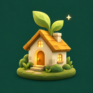

本周累计学习
0 小时 00 分从本周一开始，慢慢积累
时光村落TIMEGROVE
A TOWN IN THE MIST
我的村庄
初生聚落2 座建筑 · 3 位居民
距离上次学习打卡
尚未开始第一段专注，正等着你村庄居民
3 位再学习 60 分钟，迎来新邻居
给村庄留一份备份吧
正在种下第一棵树…
晴 · 适合读梦的一天
村庄正在悄悄生长
木材 +18/h · 星砂 +2/h
拖动旋转 · 滚轮缩放 · 点击建筑
准备出发
书屋的灯已经点亮25:00读完一个梦，小镇就亮一点。
轻点画面显示控制